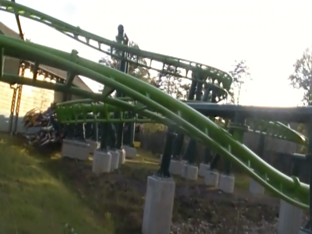

| |
Dollywood Review

OK, I know I say this about a lot of parks, but yeah. DOLLYWOOD IS FREAKING AWESOME!!! This is definetly one of the better theme parks in America. I know that this park is one of the more well known parks. Yeah, it's not nearly as well known as the Disney parks, or even the Universal parks. But people generally are familiar with Dollywood. However, while they're familiar with Dollywood, they don't really know much about it, other than...they just think that Dolly Parton has her very own theme park. And yeah. She does. And god damn it! She really knows how to run it! Well actually, she actually doesn't run it. She founded it, and is the head figure. But the park is actually run by Herschend, the same people who run Silver Dollar City. So that pretty much explains why Dollywood is so damn awesome. And when you visit the park, it is so damn obvious that this park is the sister of Silver Dollar City. They are so damn similar in nearly every single way. I mean, they both have really good coasters, including amazing RMC Woodies, they both have a really good selection of other rides, such as flat rides, water rides, and dark rides. They both have some of the best food out of any theme parks. And it's just an amazing place. I know some people just assume that a theme park associated with Dolly Parton would be more like Graceland, only for Dolly Parton instead of Elvis Presly. Or it'd be similar to Neverland Ranch that Michael Jackson owned. NOPE!!! It's not like that at all!! It's a publicly avaliable park, and it's freaking awesome! Keep reading and see why.
Rollercoasters
There is a link to a review of all the Rollercoasters at Dollywood.
Please keep in mind that there is no review of Big Bear Mountain because it didn't exist when I last visited.
Top Coasters
Lightning Rod Review
Really Good Coasters
Mystery Mine Review

Tennessee Tornado Review
Thunderhead Review
Wild Eagle Review
Family Coasters
Dragonflier Review

Firechaser Express Review
Kiddy Coasters
Whistle Punk Chaser Review
Past Coasters
Sideshow Spin Review

Flat Rides
Here are the reviews of all the Flat Rides at Dollywood. They have a pretty good flat ride collection. But we only wound up doing a couple of them. So let's talk about those. First up, Drop Line. This is the parks drop tower. And...it's a pretty good one. It's fairly big, and you get a great view of not only Dollywood, but just the Smokey Mountains in general, which really are a ton of fun. And the drop itself is pretty good. Not the greatest drop tower ever, but it's pretty good. It's made by some company called Funtime, and...I don't think I've seen another drop tower from them. If so, I'm not familiar with it. It's a pretty good drop tower. Not the best, but still good. Moving onto Barnstormer. It's a Giant S&S Swing, only they add more cool theming to it. I mean, they put it in a freaking barn. Now you might be thinking "Wait a minute. What about Silver Dollar City? Don't they also have a Screaming Swing in a barn? Yes. Yes they do. This is just one way in which, these are sister parks. And you can't blame them. These are the best Screaming Swings ever (OK. I just remembered the one at Glenwood Caverns Adventure Park. Forget that I said that). I mean, not only are these Screaming Swings a ton of fun, but the barn theming, the atmosphere, and the view of the Smoky Mountains, it's just a fantastic ride. OK. Let's go over some of the other cool flat rides they have. They also have a Disk-O, a scrambler, some teacups, some chairswings, a small ferris wheel, and I'm pretty sure they have a carousel.
The view of the Smokey Mountains from this thing really are great.
Dark Rides
Dollywood has a good dark ride collection. I know good dark rides are becoming more common nowadays, and Dollywood is a really high quality park. So they're bound to have some really cool dark rides. OK. It's not really a dark ride collection. It's only one single dark ride. But at least the one they have is fantastic. Let's talk about it. Blazing Fury. Now while many people will claim that Blazing Fury is a credit, Nope. It's a dark ride. Just like how Fire in the Hole is a dark ride and NOT a credit, the same thing applies to Blazing Fury. People say that because of the two drops at the end, it counts as a credit. But Blazing Fury is as much of a credit as Pirates of the Carribean is a shoot the chutes ride for its two drops in the beginning. But enough of that, back to Blazing Fury's awesomeness. This dark ride takes you through the eyes of a burning city. You're a firefighter heading through the city and up to try and put out the fire. And to suprise us at the end, there are two drops. And you drop. Now for the sad part, there's no splashdown at the bottom of the drop like there is on Fire in the Hole. So yeah. I'll admit. It's not quite as good. Fire in the Hole is without a doubt, the better dark ride. And I know people said that getting rid of the water was just part of Dollywood not treating it with as much love as they used to. Which really makes me sad. But even so, it's still a Top 10 Dark Ride worth checking out.
 Fun? Yes. Credit? NO!!!
Fun? Yes. Credit? NO!!!
Water Rides
OK. Now the water rides, these are something really special. Let's start out with what is without a doubt, the coolest flat ride in the park. Mountain Sidewinder. If you're wondering what this is? It's a water slide. Yep. This park just flat out has a water slide in the park. Now you sometimes had parks have these wet and dry tube slides, and that would be their water slide in the park. But no. This wasn't that. This was just a water slide, built into the mountain, just sliding down on a sort of raft. And HOLY CRAP!!! IT'S SO DAMN FUN!!! I'm not sure why this is so fun, while other water slides that are similar are fun, but not quite like this? Part of me is thinking that it's the fact that the whole thing is just built onto the mountain. Another part of me is thinking that it might be fact that you're in an amusement park, not a water park, and therefor, aren't really expecting it. So it's a nice little surprise. Either way, Mountain Sidewinder is just a really fun water ride. Do NOT underestimate it. It's really good. The other water ride really worth discussing would be Dare Devil Falls. This is...I guess you could call it a log flume. Except you're not in a log. But it sort of acts like one. Here's the thing about Dare Devil Falls. It's BIG!!! It's REALLY F*CKING BIG!!! It has some decent theming, and just this big giant drop and a splash that really gets you freaking wet! It's a fantastic water ride. There's also a Splash Battle in the park. It looks really freaking good. I know I love the one at Silver Dollar City, so I'm pretty sure it's really good here as well. So yeah. Dollywood has a fantastic water ride collection. Honestly, I think they could use a really great rapids ride. It'd fit in the park brilliantly! But even without it, Dollywood has some great water rides.
 Seriously. The fact that they just have a waterslide in the park is really freaking cool.
Seriously. The fact that they just have a waterslide in the park is really freaking cool.
Without a doubt, one of the coolest log flumes.
Water Park
If Mountain Sidewinder is not enough for you, and you want to go to a full blown water park. Well, you're in luck. Dollywood does have a full blown water park adjacent to it. Dollywood's Splash Country. Now I never visited the water park, so I can't review it. But from hearing about it, and from reading other people talking about it, this actually seems like a really good water park. Yeah. I know I wouldn't expect the Dollywood water park to be really good. Apparently, it is. Give it a visit sometime.
Dining
The food at Dollywood is AMAZING!!! I know the majority of the time, I generally don't praise theme park food. But this is some of the best. I know I rave about the food at its sister park, Silver Dollar City, and it's just as good here at Dollywood. So yeah. Dollywood is pretty high up on our Top 10 Theme Park Dining Options. So it's kind of hard to figure out where to begin? OK. Let's just start off with their Cinnamon Bread. HOLY SH*T!!! THIS STUFF IS AMAZING!!! It doesn't even taste like bread. It's like a cinammon roll, mixed with a doughnut, smothered in badassness, with a shot of an orgasm on top. That's what the Cinammon Bread tastes like. I know they also have it at Silver Dollar City, and while I love both, I actually slightly prefer the Dollywood Cinnamon Bread. Mainly just because there's a tiny bit more of a cinnamon kick to it. But even so, it's just amazing. Oh, and one more little thing to note. You can order Cinnamon Bread to go. So you can bring it home or eat it in your hotel room for breakfast the next day. Mmmm. So F*cking Good. Oh, and speaking of like Silver Dollar City, there are also those giant skillets at Dollywood. These things are really freaking good! All of the meat and vegetables from them are just so good! And those tri-tip sandwiches are....*drool*. So good!! Another thing to take note of is the fact that Dollywood has a lot of resteraunts in the park. So you have to figure out all that they have, and choose from there. Yeah. It's true with most parks, but usually with most parks, it's just generic food, and if there's anything special, it's obvious and you just get that. But everything at Dollywood is really freaking good. OK. I'm gonna talk about two resteraunts in Dollywood, since those are the two that are the most popular. First up, Granny Ogle's Ham & Beans. This as you probably guessed, it's ham and beans. It's pretty good. Granted, not my favorite since I'm not a huge ham person. Also not a huge bean person either. But yeah. It's good. And then there's the cornbread. Yeah. That stuff is really freaking good. You gotta find a place in Dollywood that sells the cornbread. Because it's really good. Now for Resteraunt #2. Miss Lillian's Chicken House. Now this isn't a resteraunt as much as it is a buffett. But they do have really good Southern Fried Chicken. And it's up there as far as Fried Chicken goes. It's all just so damn good. And of course, there's also mashed potatoes, fried apples, sweet tea, and all that other good stuff. They also have Hickory House BBQ for BBQ, Lumber Jack's Pizza (should be obvious), Red's Drive In for 50s style burgers, Victoria's Pizza, and a bunch more food.
 You HAVE to get the Cinnamon Bread at Grist Mill. SO F*CKING GOOD!!!!
You HAVE to get the Cinnamon Bread at Grist Mill. SO F*CKING GOOD!!!!
You want traditional Southern Food? Dollywood has you covered. =)
Theming and Other Attractions
Here are the reviews of all the other stuff at Dollywood. Now for theming, there's a quite a bit of it at Dollywood. The whole thing is set up to sort of give off a vibe very similar to that of the childhood home that Dolly Parton grew up in. And it's no secret that they add some decent theming on some of their more popular rides. There's all the stuff in Mystery Mine. There's all the theming on Firechaser Express, Wildwood Grove, the 50s stuff by Lightning Rod, and of course, the giant Screaming Swing in a barn. But what really makes all the theming stick out is the parks atmosphere. Just like how Silver Dollar City is located right in the middle of the Ozark Mountains, Dollywood is right in the heart of the Smokey Mountains. This is what made all the theming in the park work so well. And it just has a fantastic atmosphere. And as for other stuff to do, well...Dollywood definetly has plenty of other stuff to do. I know there's a big obstacle course over by Tennessee Tornado. I never did it solely because it was an upcharge, but honestly, it looks really cool. It seems to be a fairly big obstacle course, and on top of that, the location in the Smoky Mountains just makes it look so much cooler. But even if it's just average, it's still fun. And you just might get some neat Tennessee Tornado shots while doing so. They also have a zipline at Dollywood. It seems really cool, and going through the Smoky Mountains, that has to be a cool experience. I'm assuming it's an upcharge. And if it turns out that it wasn't an upcharge, I'm going to kick myself in the balls for not doing it. There's also some shops to browse, and of course, reminants of Dolly Parton's childhood, such as her childhood home, which would be fitting given that we are in Dollywood. So if you want to see all the Dolly Parton stuff in the same way you'd see Elvis Presly stuff at Graceland, well, there's plenty of it at Dollywood as well.
Boy. This sure is an...interesting couchsurfing experience.
In Conclusion
Dollywood is a FANTASTIC park and easily one of the best parks in America. There's no denying that. Just everything about the park is so damn good. The coaster selection is FANTASTIC. They have a Top 5 Wooden Coaster, and the other wooden coaster is also really great, as well as some other fun rides, such as a cool Eurofighter, a fun B&M Wingrider, and one of Arrow's best coasters. But even outside the coasters, it has some cool flat rides, a really unique dark ride, some really fun water rides, a water park right next door, some of the best food at any theme park, and just a ton more. It has a really good balance and ton of stuff for everyone to do. Just like it's sister park, Silver Dollar City, it has a ton to do and really fits all the criteria for great theme park. I know I couldn't stop comparing Dollywood and Silver Dollar City, but they really are twin parks and so similar in so many ways. I know I keep praising Dollywood, but you really have to check it out sometime. Do not just think of it as a place for Dolly Parton fans and that if you don't like Dolly's country music, then you wouldn't enjoy Dollywood. It's definetly one of the best things to do when in Pigeon Forge.
Enthusiast FAQs.
*Are there kiddy coaster restrictions? - Nope. You can ride Whistle Punk Chaser.

Tips
*Spend all day here.
*Be prepared to spend a lot of money at Dollywood.
*It's totally worth the money to snack your way around the park.
*DO NOT MISS THE CINAMMON BREAD!!!
*You can take the Cinnamon Bread to go. So bring some home with you.
*Go straight to Lightning Rod if you see it open.
*Have Fun!!!!
Location
Pigeon Forge, Tennessee, U.S.A
Theme Park Category:
Theme Park
Last Day Visited
July 24, 2019
Video
I'm not making a Dollywood video with Lightning Rod being closed. Plus, I feel a Dollywood video would be a challenge.
Complete Update List
2019
Mid-Atlantic Trip 2019
2016
Deep South Trip 2016
Here's a link to the parks website.
Home
|